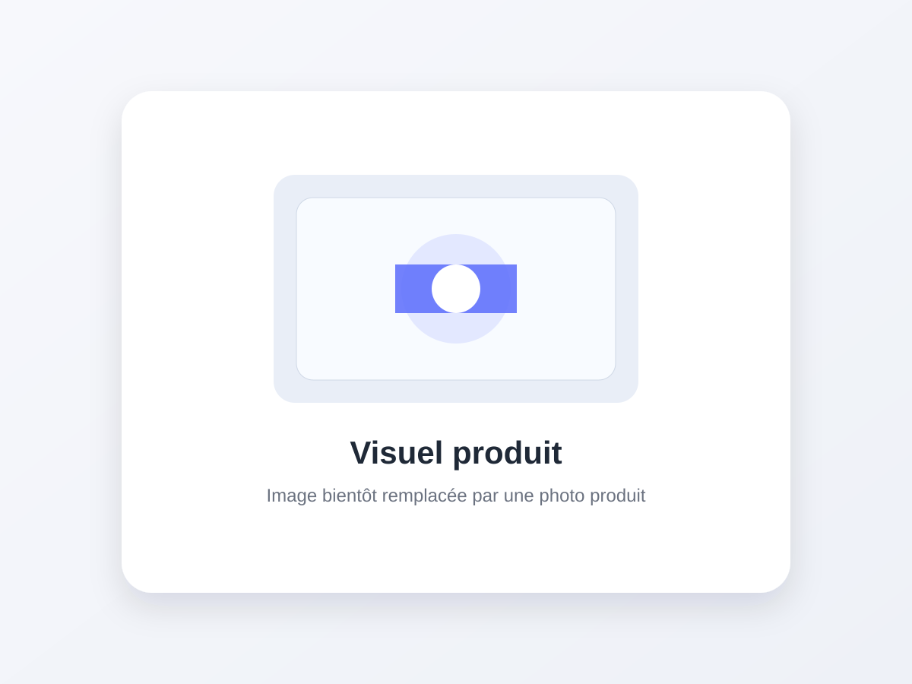

CTEK MXS 5.0 EU
Chargeur intelligent 12 V pour batteries plomb-acide, avec cycle automatique en plusieurs étapes.

Entretien batterie
CTEK · Batterie & démarrage
Cette fiche met l’accent sur l’usage électrique réel du produit : démarrage d’urgence, recharge ou maintien de batterie. Vérifiez toujours la compatibilité avec votre batterie et votre moteur.
Voir le prix actuel sur Amazon →Lien rémunéré : TopUtile peut percevoir une commission sur un achat éligible.Comparer les offres
L’essentiel
Pour quel usage ?
Recharge batterie. Cycle de charge automatique
Caractéristiques principales
Référence56-305
Tension12 V
Courant de charge5 A
Batteries annoncées1,2 à 160 Ah
Points forts
- Cycle de charge automatique
- Compatible avec plusieurs technologies plomb-acide
- Compensation de température
À vérifier
- Pas un booster de démarrage
- Compatibilité lithium non prévue sur cette version
Alternatives dans la même catégorie
NOCO
NOCO Boost GB40 1000A
Voir la fiche →NOCONOCO Boost X GBX45
Voir la fiche →NOCONOCO GENIUS5
Voir la fiche →Guides associés
Pour replacer ce produit dans un comparatif plus large : Comparer les chargeurs de batterie CTEK et NOCO · Booster ou chargeur : comprendre la différence